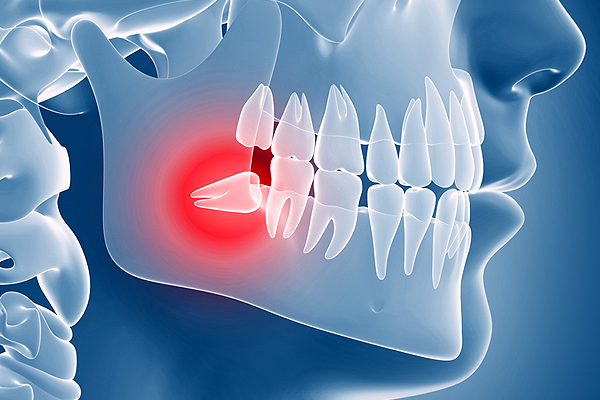

사랑니 치료, 만만하게 보면 안 되는 이유
사랑니의 수는 사람마다 제각기 달라서 1개도 없는 사람, 1개만 있는 사람, 4개 모두 있는 사람 등 다양합니다. 이렇게 사람마다 치아의 수가 다른 이유는 바로 사랑니 때문입니다.
사랑니 꼭 뽑아야 하나요?
사랑니가 잇몸을 조금만 뚫고 난 경우에는 염증이 생기기 쉬운데 이 경우 얼굴이 심하게 붓고 입이 잘 안 벌어지는 경우까지 발전되고 고름이 생기기도 합니다. 대개는 이런 경우라도 염증 치료 후 발치 하면 되지만 염증이 오히려 심하게 퍼지는 경우에는 입원하여 치료하는 경우도 있습니다. 특히 임산부의 경우에서 염증이 잘 생기므로 결혼 전에 사랑니를 빼는 것이 좋습니다.
꼭 뽑아야 하는 사랑니
- 잇몸 밖으로 보이며,
어금니와 지나치게 가까운 사랑니 - 잇몸이 씹히는 사랑니
- 주변에 물혹을 만들고 있는 사랑니
애매하지만 필요한 경우 뽑는 사랑니
- 얼굴과 턱이 작아 이가 삐뚤게 난 경우
언제 뽑아야하나요?
병적 증상 발생 시, 검진 후 필요 시 항생제 복용 후 발치를 하는 것이 권장되며, 예방적 발치의 경우 연령의 증가에 따라 유착의 가능성이 높아지므로 20대에 발치를 하는 것을 권장합니다.
뽑지 않고 그대로 두었을 때 어떻게 되나요?
사랑니 주변 염증의 반복적 발생 시, 두 번째 큰어금니를 포함한 만성 염증으로 진행될 수 있으며, 농배출, 안면부의 부종, 개구제한 등을 동반한 중증 감염으로 발전될 수 있습니다.